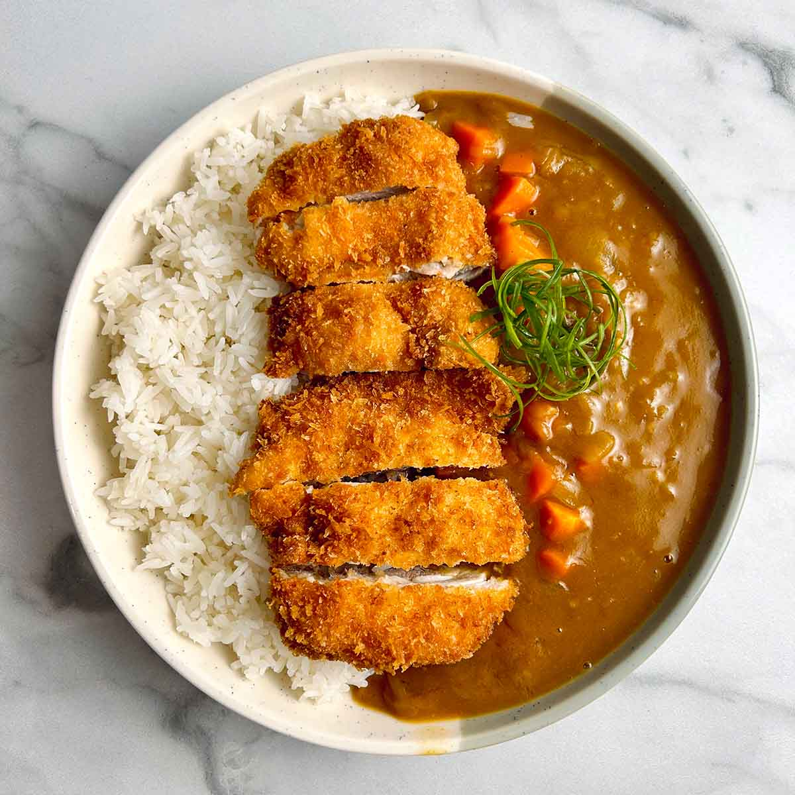

Vegan Japanese Katsu Curry

Description
This is a variation of my tofu curry!
One day it just popped into my head, I had never had it but had seen it all over the animes I was watching and decided to give it a try!
It ended up being SOO simple and filling, I had to share it here! Its perfect for those cold Februrary and March evenings.
I adjusted it to be the perfect dish for 2 people so feel free to double as needed.
召上がれ!
Serves: 2
Prep time: 10 min
Cook time: 15 min
Ingredients
- Half of my tofu curry recipe - omit the potatoes and tofu
- Jasmine rice to serve (I recommend following this video tutorial to make the perfect rice!)
- 2 Vegan schnitzel cutlets either homemade or storebought (I personally love the Vivera brand from Europe!)
If making homemade, I highly recommend this recipe for vegan schnitzel
Steps
- Cook the vegan schnitzel cutlets as instructed depending on if making homemade or storebought.
- While your vegan cutlets are cooking, follow my tofu curry recipe while omitting steps 1 and 6, and halving all the ingredients.
Since the recipe is halved, the cook time is also lessened. Only simmer the curry for a maximum of 7 minutes
- Once your vegan schnitzel is done baking/frying, cut it into individual strips.
- Then assemble! Order: Rice, sliced vegan schnitzel, curry, enjoy!